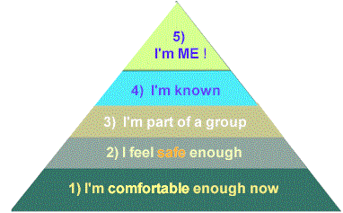

About human needs, continued
from page 1...
Updated
02-20-2015
 Maslow's Hierarchy of Needs
Maslow's Hierarchy of Needs
In
1968, students of human behavior began to study psychologist Abraham Maslow's
newly updated book
Toward
a Psychology of Being. A theme of his observations
about how we all think, feel, and act has been called the "hierarchy of needs."
It looks like this:
Maslow proposed
that every child and adult has overlapping needs that fall into naturally-ranked levels
or priorities:
Level
1: reduce
current
physical
discomforts
first:
hunger, thirst, pain, air, temperature, smells, balance, noise, light, and rest (sleep). When those
are satisfied enough now...
Level 2: We try to fill our
need to
feel
safe enough in the near future. Safety
comes from trusting that our level-one needs will be reliably met in the coming
hours and days (our safety zone). In our
society, that translates into believing that we'll have a dependable source of
money
to buy those securities. The safety zone is short for some people, longer
for
others.
Maslow suggested that when we feel comfortable and safe enough, we
then try to fill...
Level 3:
our need for companionship:
our primitive need to feel accepted by, and part of, a group of other people.
We need to
feel we
belong
to (are accepted by) a family, tribe, group, or
clan. The alternative is feeling we're alone (and unsafe) in the world.
For infants, being alone too long means dying.
People abandoned emotionally or physically
too often as infants
unconsciously grow
subselves who remain terrified of abandonment
in adulthood. Alternatively, their subselves protect them from (another)
devastating
by (unconsciously) never
with anyone.
Semi-conscious
terror of rejection and abandonment is one
root of relationship
and
The other root is
excessive
("I'm flawed and unlovable!") Unacknowledged
codependence and it's underlying
psychological wounds often cause adults to
unconsciously pick
wounded, unaware people over and over again,
until they choose to heal. Personal
can
significantly reduce each root of codependence, over
time. These ideas gained general public and clinical acceptance several
decades after Maslow published this hierarchy of needs.
He
proposed that if we fill our level
1, 2, and 3 needs well enough,
then we focus on filling...
Level 4: our need to be recognized as special
and valuable by our group. We need to be more than just a featureless face
in the crowd, we need to be known and appreciated
as a unique, respected person.
of
childhoods who were
shamed too often as young children may search endlessly for the specialness and praise they
never got.
Paradoxically, their
discounts
praise when it's offered ("I really don't
deserve it"). Until wound-recovery releases them from this endless quest, such burdened,
unaware
people are never really free to achieve...